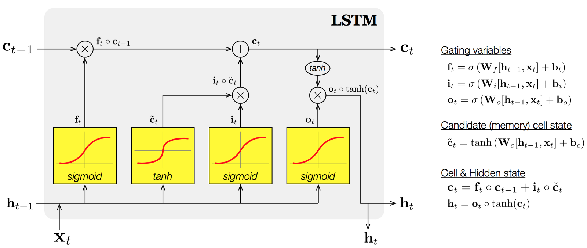
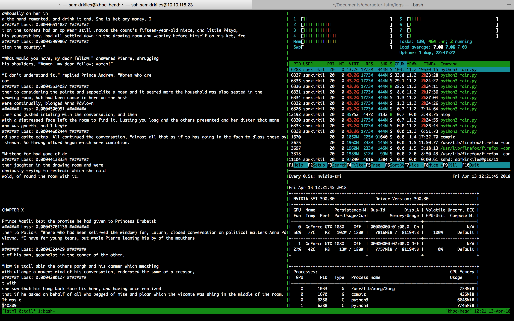

I trained a multi-layered character level LSTM with the following cell architecture.
The network has three stacked layers of cells with a batch sequence length size of 100. I trained on a single NVIDIA GeForce 1080. You can download the pre-trained model here.
Performance with random weights before training:
U—CN3gLBddDWÁu!HÁ”;ap/8!ôdPEç’hÁóblOxD/ç)Vsn@i)Á”YáPx wDöAhDœ “uwDóJ$—u)cDèBDü->èAàZ@zàB(ióH$äaFu3ýYm FniRLMÉKmYwBwZO@Uuaîq @AG()%aèLî$5b%üpïER=—‘À*mê?ç:VB’BlcFI y5hf98JouVjAúoöt(y(WWnRE; él:xGlêEWÀnoG
Examples of text hallucinations after training:
the ball, calmls happened to you, does he cavered in the steps to maken, narged the wortured loud. The doctor and from his ?? fatare and ran now a run into the existence of the great some! They were saying, he felt a drunk as you weight he saw in its away you on leaving a reflection”arch, and all they had till the army and are no waiting those people was heart free terringly with somewhere.
“To pass? Dudly—retelies to them said for his place of Austria consulting impossible, more still told his corrigencial it had way out of honors could not been glanced lea into the comrades merely to a relate.
Without will be a the people she told not your house, looking began unterestby plump ask.
The old fair that that it he has escort of our dresses ready, but his dwant to you wagrag immediately if bridge and rouding to kiss a whit of relay of, he must do so, is not imaginex regard to really singers, and exembrowed smiles, stapid vicious own ind-Ardisoners, quition, and I have letter she rose and
